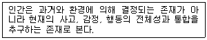
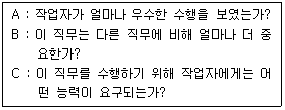
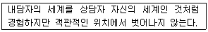
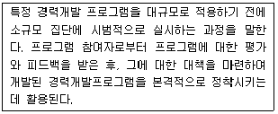
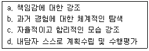
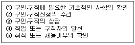
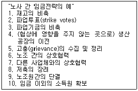
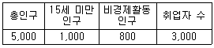

직업상담사-2급(구) (2003-03-16 기출문제)
1과목: 직업상담ㆍ심리학
1. 다음은 어떤 상담기법의 인간관을 나타내고 있는가?

- 정신분석학적 상담
- 형태주의 상담
- 아들러의 개인주의 상담
- 교류분석적 상담
(정답률: 알수없음)

2. 반두라(Bandura)의 사회인지적 진로 발달론을 잘못 설명한 것은 ?
- 직업행동을 이해하는데 흥미를 중요하게 다룬다.
- 개인, 환경, 외형적 행동 간에 상호작용을 강조한다.
- 성과기대나 개인목표와 같은 인지적 과정을 주로 다룬다.
- 자기 효능감을 진로발달의 중요한 개인적 결정요인으로 가정한다.
(정답률: 알수없음)
3. 로저스(C. Rogers)가 말한 내담자 변화의 필요충분조건은?
- 공감, 수용, 일치
- 의식, 전의식, 무의식
- 감각, 알아차림, 접촉
- 비합리적 신념, 논박, 결과
(정답률: 알수없음)
4. 직업발달이론에서 파슨스가 제안한 특성-요인 이론의 핵심적인 가정은?
- 각 개인들은 객관적으로 측정될 수 있는 독특한 능력을 지니고 있으며, 이를 직업에서 요구하는 요인과 합리적인 추론을 통하여 매칭 시키면 가장 좋은 선택이 된다.
- 분화와 통합의 과정을 거치면서 개인은 자아정체감을 형성해 가며 이러한 자아정체감은 직업정체감의 형성에 중요한 기초요인이 된다.
- 진로발달 과정은 유전요인과 특별한 능력, 환경조건과 사건, 학습경험, 과제접근 기술 등의 네 가지 요인과 관계가 있다.
- 초기의 경험이 개인이 선택한 직업에 대한 만족에 매우 중요한 요인이라고 강조하면서 개인의 성격유형과 직무환경의 성격을 여섯 가지 유형으로 구분하고 있다.
(정답률: 알수없음)
5. 직업의식은 3가지 양식으로 표상되는데 이것에 포함되지 않는 것은 ?
- 가치
- 동기
- 태도
- 의견
(정답률: 알수없음)
6. 조직 내에서 훈련의 필요성을 평가할 때 고려하는 사항이 아닌 것은?
- 사회분석
- 조직분석
- 운영분석
- 개인분석
(정답률: 알수없음)
7. 다음 중 생애 직업발달에 대한 설명으로 틀린 것은?
- 개인의 역할, 상황, 사건간의 상호작용에 대한 개념이다.
- 개인의 생활양식에 따라 다양하게 표현된다.
- 단일 시점의 특정한 사건을 해결하는 방안에 대한 개념이다.
- 자아발달을 강조하는 개념이다.
(정답률: 알수없음)
8. 주장훈련은 어느 상담이론에서 활용되는 기법인가?
- 형태주의적 상담
- 정신역동적 상담
- 행동주의적 상담
- 교류분석적 상담
(정답률: 알수없음)
9. Ellis의 합리적 정서치료에서 A, B, C, D, E 모형의 설명으로 잘못된 것은?
- A : 선행사건
- B : 신념
- C : 결과(정서, 행동 등)
- D : 지지와 격려
(정답률: 알수없음)
10. 다음 중 상담자의 태도로서 바람직한 것은?
- 내담자와 거래적 관계를 유지하면서 대한다.
- 내담자의 이야기는 선택적으로 경청한다.
- 상담자도 필요하다면 자신의 것을 적절하게 공개하는 개방적 자세를 갖는다.
- 내담자의 문제를 파악하기 위하여 가능한 많은 질문을 한다.
(정답률: 알수없음)
11. 직업상담을 실시할 때 내담자의 유형과 특성을 잘 파악해야 하는데, 내담자를 상담에 적극적으로 임하도록 도와주는 방법 중 부적절한 것은?
- 계속 들어준다.
- 내담자의 분노, 좌절, 방어를 예상해야 한다.
- 설득방법을 활용해야 한다.
- 철저한 대면을 한다.
(정답률: 알수없음)
12. 직업상담 장면에서 구직자의 외모가 좋은 경우, 그가 다른 능력도 우수할 것으로 추측하는 편향이 있다. 이러한 편향은 무엇인가?
- 귀인편향
- 후광효과
- 관대성 편향
- 단순노출 효과
(정답률: 알수없음)
13. 검사 점수의 표준 오차에 대한 다음 설명 중 맞는 것은?
- 검사의 표준오차는 클수록 좋다.
- 검사의 표준오차는 검사 점수의 타당도를 나타내는 수치다.
- 표준오차를 고려할 때, 오차 범위 안의 점수 차이는 무시해도 된다.
- 표준오차가 크더라도 검사 점수의 작은 차이를 중요하게 받아들여야 한다.
(정답률: 알수없음)
14. 장애를 가진 내담자를 위한 집단상담 프로그램에서 가장 중요한 활동은?
- 심리검사 실시
- 취업동기평가
- 사회적응을 위한 상담활동
- 가족관계
(정답률: 알수없음)
15. 다음 중 내담자 중심 상담 이론에 대한 설명으로 틀린 것은?
- 내담자들이 완전히 기능하는 사람이 될 수 있다고 보았다.
- 인간은 자신이 나아가야 할 방향을 찾고 건설적 변화를 이끌 수 있는 능력이 있음을 가정한다.
- 내담자들로 하여금 사회적 관심을 갖도록 도우며 열등감을 감소할 수 있도록 돕는다.
- 기본적인 상담 기법으로 적극적 경청, 감정 반영, 명료화, 공감적 이해 등이 이용된다.
(정답률: 알수없음)
16. 많은 상담기법들은 내담자를 상담하기 이전에 그의 문제점을 알아보기 위한 진단이 필요하다고 본다. 다음 중 상담 이전에 심리진단이 필요하지 않다고 보는 입장은 어느 것인가?
- 정신분석적 상담
- 내담자 중심 상담
- 형태주의 상담
- 교류분석적 상담
(정답률: 알수없음)
17. 다음 중 실업 후 직업상담 프로그램의 유형에 해당되는 것은?
- 실업충격완화 프로그램
- 직장 스트레스 대처 프로그램
- 직업적응 프로그램
- 조기퇴직계획 프로그램
(정답률: 알수없음)
18. 다음 중 직무명세서를 설명한 것은?
- 분석대상이 되는 직무에서 어떤 활동이나 과제가 이루어지고 작업조건이 어떠한지를 알아내어서 그러한 것들을 기술해 놓은 것이다.
- 직무를 수행하는 사람에게 요구되는 지식, 기술, 능력 등과 같은 인간적 요건이 무엇인지에 관한 정보를 적어 놓은 것이다.
- 분석자가 직접 사업장을 방문하여 작업자가 하는 직무활동을 상세하게 관찰하여 그 결과를 기술하여 놓은 것이다.
- 각 직무에 대하여 공정하고 적절한 임금수준을 결정하기 위하여 각 직무의 내용과 성질을 고려하여 직무들 간의 상대적인 가치를 결정하여 놓은 것이다.
(정답률: 알수없음)
19. 다음과 같은 질문에 해당되는 직업 심리학의 영역을 올바르게 짝지은 것은?

- A-직무분석, B-직무수행평가, C-직무평가
- A-직무수행평가, B-직무평가, C-직무분석
- A-직무평가, B-직무수행평가, C-직무분석
- A-직무수행평가, B-직무분석, C-직무평가
(정답률: 알수없음)
20. 개인이 진로를 결정하는데 장애가 되는 요인을 파악하고 교육 및 진로 미결정의 선행요인을 알아내기 위한 목적으로 활용되는 검사는?
- 진로성숙척도
- 진로결정척도
- 진로개발검사
- 진로계획척도
(정답률: 알수없음)
21. 직업상담의 초기면담을 마친 후에 상담자가 면담을 정리하기 위해 검토해야 할 사항으로 가장 부적절한 것은?
- 사전자료를 토대로 내렸던 내담자에 대한 결론은 얼마나 정확했는가?
- 상담에 대한 내담자의 기대와 상담자의 기대는 얼마나 일치했는가?
- 내담자에 대하여 어떤 점들을 추가적으로 평가해야 할 것인가?
- 내담자에 대한 적절한 직업을 추천하였는가?
(정답률: 알수없음)
22. 직업상담의 기법 중에서 비지시적 상담 규칙이 아닌 것은?
- 상담자는 내담자와 논쟁해서는 안 된다.
- 상담자는 내담자에게 질문 또는 이야기를 해서는 안 된다.
- 상담자는 내담자에게 어떤 종류의 권위도 과시해서는 안 된다.
- 상담자는 인내심을 가지고, 우호적으로, 그러나 지적으로는 비판적인 태도로 내담자의 말을 경청해야 한다.
(정답률: 알수없음)
23. 다음은 상담대화의 대표적인 기술에 대한 설명이다. 무엇에 대한 내용인가?

- 수용
- 전이
- 공감
- 동정
(정답률: 알수없음)
24. 심리검사를 선택하고 해석하는 과정에서 잘못 설명한 것은?
- 검사는 진행 중인 상담과정의 한 구성요소로만 보아야 한다.
- 검사는 내담자의 의사결정을 돕기 위한 정보를 얻는 하나의 도구이다.
- 검사는 내담자와 함께 협조해서 선택하는 것이 좋다.
- 검사의 결과는 가능한 한 내담자에게 제공해서는 안 된다.
(정답률: 알수없음)
25. 다음의 스트레스 요인과 상황에 대한 설명 중 틀린 것은?
- 좌절(Frustration) - 원하는 목표가 지연되거나 차단될 때
- 과잉부담(Overload) - 개인의 능력을 벗어난 일이나 요구일 때
- 갈등(Conflict) - 두 가지의 긍정적인 일들이 갈등을 일으킬 때
- 생활의 변화(Life Change) - 부정적인 사건이 제한된 시간 내에 많을 때
(정답률: 알수없음)
26. 효과적인 상담을 위해 상담자가 갖추어야 할 자질이 아닌 것은?
- 인간본성에 대한 긍정적 관점과 타인의 행복을 위한 진실한 관심을 갖는다.
- 상담자의 유머감각은 진정한 의미의 치료에 도움을 주지 않는다.
- 상담활동 동안에도 전문지식에 대한 훈련을 지속적으로 받아야 한다.
- 상담자 자신의 가치관, 욕구, 목표 등에 대한 자각을 통해 내담자에게 미치는 영향력을 고려.
(정답률: 알수없음)
27. 심리검사를 실시할 때 지켜야 할 사항이 아닌 것은?
- 검사의 구두 지시사항을 미리 충분히 암기한다.
- 지나친 소음과 방해자극이 없는 곳에서 검사를 실시한다.
- 수검자에 대한 관심과 협조, 격려를 통해 수검자로 하여금 검사를 성실히 하도록 한다.
- 일반 수검자에게 검사결과를 통보할 때는 통계적인 숫자나 용어를 사용하여 기계적으로 전달하여야 한다.
(정답률: 알수없음)
28. 진로 선택과 관련된 이론으로 인생초기의 발달 과정을 중시하는 이론은?
- 인지적 정보처리이론
- 정신분석이론
- 사회학습이론
- 발달이론
(정답률: 알수없음)
29. 다음 설명은 경력개발프로그램 개발 과정 중 어디에 해당하는 것인가?

- 요구 조사
- 자문(consulting)
- 팀-빌딩(team-building)
- 파일럿 연구(pilot study)
(정답률: 알수없음)
30. Holland 가 제시한 육각 모형에서 제시한 6가지 직업 유형에 속하지 않는 것은?
- 기술적 유형
- 현실적 유형
- 예술적 유형
- 사회적 유형
(정답률: 알수없음)
31. 인간의 성격 유형을 6가지로 구분한 홀랜드 흥미검사에서 과거나 미래보다는 현재를 중요시하고 사람보다는 사물-지향적인 작업을 선호하는 사람의 유형은?
- 탐구형
- 관습형
- 사회형
- 현실형
(정답률: 알수없음)
32. 다음 중 현장연구의 장점은?
- 외적 타당도가 높고, 한 번에 많은 변인들에 대한 자료를 동시에 수집할 수가 있다.
- 가외변인의 영향을 엄격히 통제할 수 있다.
- 피험자나 실험조건의 무선배치가 가능하다.
- 독립변인을 자유롭게 조작할 수가 있다.
(정답률: 알수없음)
33. 다음 중 좋은 심리검사가 갖추어야 할 조건이 아닌 것은?
- 타당도
- 신뢰도
- 표준화
- 추상적 구성개념
(정답률: 알수없음)
34. 다음 중 직업 상담 영역이 아닌 것은?
- 은퇴상담
- 직업전환상담
- 취업상담
- 실존문제상담
(정답률: 알수없음)
35. 행동주의 접근의 상담기법 중 불안이 원인이 되는 부적응 행동이나 회피행동을 치료하는 데 가장 효과적인 기법은?
- 타임 아웃기법
- 모델링 기법
- 체계적 둔감법
- 과잉 교정기법
(정답률: 알수없음)
36. 직무분석 절차 중 작업자 지향적 절차는 직무를 성공적으로 수행하는데 요구되는 인적 속성들을 조사함으로써 직무를 이해하려고 한다. 다음 중 인적속성에 해당하지 않는 것은?
- 태도
- 지식
- 기술
- 능력
(정답률: 알수없음)
37. 직무만족을 측정하는 방법의 하나로 직무에 대한 진술문에 대해 5개의 선택지들 중에 하나에 표시하여 태도를 나타내는 표준화된 양식을 이용하는 방법은?
- 서스톤 척도(Thurstone scale)
- 의미미분척도(Semantic Differentials)
- 리커트 척도(Likert scale)
- 거트만척도(Guttman scale)
(정답률: 알수없음)
38. 다음 중에서 Weiner의 성취귀인이론에 해당되는 것은?
- 높고 구체적인 목표일수록 낮고 애매한 목표보다 작업동기가 높아진다.
- 작업 목표를 달성할 가능성이 높다고 기대할수록 작업동기가 높아진다.
- 작업 목표 달성에 따른 보상이 클수록 작업동기가 높아진다.
- 동기가 높은 사람은 성공의 원인을 자신이 열심히 노력한 탓으로 돌린다.
(정답률: 알수없음)
39. 최근 직업 심리학에서 인간의 생애 주기를 연구하는 목적이 아닌 것은?
- 최근 직업에 종사하는 사람들이 직업보다는 가정생활에 더 큰 의미를 두기 때문
- 최근에는 은퇴 후에도 직업 복귀 경향이 높아지고 있기 때문
- 직업에 종사하는 기간이 길어지고, 오랜 직업생활을 유지하려는 욕구가 강해지고 있기 때문
- 개인의 직업의식이나 가치관에 급격하게 변하고 있기 때문
(정답률: 알수없음)
40. 다음 중 현실치료의 특징으로 적절하게 짝 지워진 것은?

- a, b, c
- b, c, d
- a, c, d
- a, b, d
(정답률: 알수없음)
2과목: 직업정보론(노동시장론 포함)
41. 한국직업사전의 직업명세 중 자료(data)에 관한 직무를 정의한 것이다. 다음 중 올바른 것은?
- 조정 : 쉽게 관찰되는 자료. 사람 및 사물의 기능적. 구조적 및 조합적 특성을 판단한다.
- 수집 : 사칙연산과 관련하여 규정된 활동을 수행하거나 보고를 한다.
- 비교 : 데이터의 분석에 기초하여 시간. 장소. 작업순서 및 활동 등을 결정한다.
- 종합 : 사실을 발견하고, 지식개념 또는 해석을 개발하기 위한 데이터를 분석한다.
(정답률: 알수없음)
42. 노동조합 조직부문의 임금인상이 노조 비조직 부문에 미치는 효과에 대한 설명 중 틀린 것은?
- 파급효과는 노조조직부문에서 비조직 부문으로의 노동이동을 유발하여 비조직부문의 임금을 하락시키는 효과이다.
- 위협효과는 비조직부문의 임금을 상승시키는 효과이다.
- 파급효과는 비조직 부문에서 노조조직부문으로 노동이동을 유발하여 조직부문의 임금을 하락시키는 효과이다.
- 위협효과는 노조의 잠재적인 조직 위협에 직면한 비조직 부문 사용자로 하여금 임금을 인상하게 하는 효과이다.
(정답률: 알수없음)
43. 최근 중요한 고용관행으로 자리잡아가고 있는 성과급제도의 장점으로 적절한 것은?
- 직원 간 화합이 용이하다.
- 근로의 능률을 자극할 수 있다.
- 임금의 계산이 간편하다.
- 확정적 임금이 보장된다.
(정답률: 알수없음)
44. 직업안정기관에서 취업알선 절차로 맞는 것은?

- ① - ② - ③ - ④ - ⑤
- ① - ③ - ② - ④ - ⑤
- ① - ④ - ③ - ② - ⑤
- ① - ② - ④ - ③ - ⑤
(정답률: 알수없음)
45. 근로자에게 직업에 필요한 기초적 직무수행능력을 습득시키기 위하여 실시하는 훈련과정은?
- 양성훈련
- 향상훈련
- 전직훈련
- 집체훈련
(정답률: 알수없음)
46. 연공급의 장점이 아닌 것은?
- 기업에 대한 귀속의식 제고
- 고용안정
- 근로자에 대한 교육훈련의 효과 제고
- 인건비부담의 감소
(정답률: 알수없음)
47. 다음 중 미래 산업구조의 특성이라고 볼 수 없는 것은?
- 자본집약 산업발달
- 기술집약적 산업구조 형성
- 노동집약 산업발달
- 국제화 가속
(정답률: 알수없음)
48. 다음 중 고용안정센터에서 수행하는 업무는?
- 고용보험 피보험자격 취득신고
- 보험관계 성립신고
- 보험료감액 조정신청
- 실업급여 반환금 징수업무
(정답률: 알수없음)
49. 2010년까지 취업자 구성비의 추이를 전망할 때, 취업자 구성비가 현재보다 증가할 것으로 예상되는 직업 대분류는?
- 농림어업근로자
- 기술공 및 준전문가
- 장치, 기계조작원 및 조립원
- 단순노무직
(정답률: 알수없음)
50. 기업문화가 기업에 미치는 영향을 설명으로 틀린 것은?
- 기업문화는 항상 답습에 의해 그대로 유지된다.
- 기업문화는 구성원의 의사전달에 영향을 미친다.
- 기업문화는 기업 내 부서간의 갈등에도 영향을 미친다.
- 기업문화는 기업전략에 영향을 미친다.
(정답률: 알수없음)
51. 우리나라 노동조합의 주된 조직형태는?
- 직업별 노동조합
- 산업별 노동조합
- 일반 노동조합
- 기업별 노동조합
(정답률: 알수없음)
52. 다음 노동수요특성별 임금격차의 원인 중 경쟁적 요인이 아닌 것은?
- 인적자본량
- 비효율적 연공급제도
- 효율성 임금정책
- 보상적 임금격차
(정답률: 알수없음)
53. 다음 중 우리나라 기업의 노사협의회에서 다루고 있지 않은 사항은?
- 생산성 향상
- 근로자 교육훈련
- 임금 및 근로조건
- 보건·안전
(정답률: 알수없음)
54. 직업정보제공 관련 내용 중 틀린 것은?
- 한국표준직업분류 - 직업에 대한 분류
- 매월 노동통계조사보고서 - 노동시장의 현황 및 임금, 근로시간 등
- 한국직업사전 - 직업에 대한 직무내용 및 직업명세서 제시
- 국가기술자격검정안내서 - 부동산관리사, 자동차관리사 등의 자격검정 안내
(정답률: 알수없음)
55. 산업 중 분류별, 규모별, 성별, 근로자종류별 상용근로자수, 입직률, 이직률, 근로일수, 근로시간 수, 내역별 임금 등을 알 수 있는 직업정보원은?
- 한국표준직업분류
- 매월노동통계조사
- 고용전망조사
- 노동력 수요전망
(정답률: 알수없음)
56. 다음 중 분단노동시장 이론과 가장 거리가 먼 것은 ?
- 빈곤퇴치를 위한 정책적인 노력이 쉽게 성공하지 못하고 있다.
- 내부노동시장과 외부노동시장은 현격하게 다른 특성을 갖는다.
- 근로자는 임금을 중심으로 경쟁하는 것이 아니라 직무를 중심으로 경쟁하기도 한다.
- 고학력 실업자가 증가하면 단순노무직의 임금도 하락한다.
(정답률: 알수없음)
57. 경쟁시장에서 아이스크림 가게를 운영하는 김씨는 5명을 고용하여 1개당 2000원에 판매하고 있다. 시간당 12,000원을 임금으로 지급하면서 이윤을 극대화하고 있다. 만일 아이스크림 가격이 3000원으로 오른다면 현재의 고용수준에서 노동의 한계생산물가치는 시간당 얼마일까? 이때 김씨는 노동의 투입량을 어떻게 변화시킬까?
- 9,000원, 증가시킨다.
- 18,000원, 증가시킨다.
- 9,000원, 감소시킨다.
- 18,000원, 감소시킨다.
(정답률: 알수없음)
58. 최종생산물이 수요자에 의하여 수요되기 때문에 그 최종 생산물을 생산하는 데 투입되는 노동이 수요된다고 할 때 이러한 수요를 무엇이라고 하는가 ?
- 유효수요
- 잠재수요
- 파생수요
- 실질수요
(정답률: 알수없음)
59. 직업정보시스템의 정보관리 순서가 적절한 것은?
- 수집 - 분석 - 가공 - 체계화 - 제공 - 평가
- 수집 - 가공 - 분석 - 제공 - 평가 - 체계화
- 수집 - 분석 - 평가 - 가공 - 체계화 - 제공
- 수집 - 분석 - 체계화 - 제공 - 가공 - 평가
(정답률: 알수없음)
60. 다음 중 노동공급의 감소로 발생되는 현상은?
- 사용자의 경쟁심화로 임금수준의 하락을 초래한다.
- 고용수준의 증가를 가져온다.
- 임금수준의 상승을 초래한다.
- 일시적인 초과 노동공급현상을 유발한다.
(정답률: 알수없음)
61. 한국표준직업분류(2000)의 대분류 9에 해당되는 것은?
- 사무직원
- 단순노무종사자
- 서비스근로자 및 상점과 시장판매 근로자
- 기능원 및 관련 기능근로자
(정답률: 알수없음)
62. 제5차로 개정된 한국표준직업분류의 내용 중 옳은 것은?
- 대분류 11, 중분류 46개, 소분류 162개, 세분류 447개, 세세분류 1,404개로 분류되었다.
- 대분류의 내용 중에서는 3. 사무 종사자, 4. 판매 종사자, 5. 서비스 종사자, 6. 농업, 임업 및 어업숙련 근로자 등으로 분류된다.
- 고도로 자동화된 산업용 기계 및 장비를 조작하고 부분품을 가지고 제품을 조립하는 업무로 구성된 대분류는 7. 기능원 및 관련기능종사자이다.
- 품질검사 직종은 제품을 기계적으로 검사하는 것과 단순한 시각적 확인검사를 주로 하는 시험이 포함된다.
(정답률: 알수없음)
63. 다음 중 직업안정기관에 대한 설명 중 틀린 것은?
- 고용안정센터는 취업지원업무의 전문화를 위하여 기존의 고용안정업무와는 별도로 설치된 기관이다.
- 직업소개 등 업무처리규정에 의하여 지방자치단체의 장은 취업정보센터 등을 설치·운영 할 수 있다.
- 일일취업센터는 일용근로자에 대한 취업알선 및 생활안정업무를 수행하기 위하여 설치된 기관이다.
- 인력은행은 노동부와 지방자치단체가 공동으로 설치하여 운영하는 직업안정기관이다.
(정답률: 알수없음)
64. 다음 중 최근 우리나라 기업들에서 그 경향이 약화되고 있는 것이 아닌 것은?
- 연봉제
- 종신고용제
- 연공서열제
- 호봉제
(정답률: 알수없음)
65. 노동수요를 결정하는 요인과 가장 거리가 먼 것은 ?
- 노동생산성
- 노동 이외의 생산요소의 가격
- 노동에 대체되는 여가의 가치
- 노동에 의해 생산된 상품에 대한 소비자들의 수요
(정답률: 알수없음)
66. 2000년에 노동부에서 발간한 취업알선직업코드 설명집에서 주식, 파생상품, 채권 등을 매입 또는 매각하려는 법인 또는 일반인을 위해 그들이 희망하는 거래 주문을 받아서 거래를 성사시키는 업무를 수행하는 사람은?
- 펀드매니저
- 투자분석가
- 증권중개인
- 증권사무원
(정답률: 알수없음)
67. 한국직업사전에는 각 직업별로 환경조건을 분석하여 제시한다. 다음의 직업명세 항목 가운데 환경 조건으로 볼 수 있는 것은?
- 힘의 강도
- 손의 이용
- 작업장소
- 오르거나 균형 잡음
(정답률: 알수없음)
68. 임금-물가 악순환론, 지불능력설, 한계생산력설 등에 영향을 미친 임금결정이론은?
- 임금생존비설
- 임금철칙설
- 노동가치설
- 임금기금설
(정답률: 알수없음)
69. 직업정보관리와 관련한 설명으로 틀린 것은 ?
- 직업정보의 범위는 개인에 대한 정보, 직업에 대한 정보, 미래에 대한 정보로 구성되어 있다.
- 대표적인 직업정보원은 정부부처이며, 그밖에도 정부투자출연기관, 단체 및 협회, 연구소, 기업과 개인 등이 있다.
- 직업정보 가공 시에는 전문적인 지식이 없이도 이해할 수 있도록 가급적 평이한 언어로 제공되어야 하며 직무의 장단점을 편견 없이 제공하여야 한다.
- 개인의 정보는 보호되어야 하기 때문에 구직 시에 연령, 학력 및 경력 등은 제공하지 않는 것이 좋다.
(정답률: 알수없음)
70. 다음 중 임금격차의 원인으로서 통계적 차별(statistical discrimination)이 일어나는 경우는?
- 임금이 개별 노동자의 한계생산성에 근거하여 설정될 때
- 사용자 자신의 개인적 편견에 따라 근로자의 임금을 결정할 때
- 비숙련 외국인노동자에게 낮은 임금을 설정할 때
- 사용자가 근로자의 생산성에 대한 불완전한 정보를 갖고 있어 평균적인 인식을 근거로 임금을 결정할 때
(정답률: 알수없음)
71. 다음은 임금교섭 전의 노사의 전략을 열거한 것이다. 이 중에서 근로자의 전략에 속하는 것은?

- 2, 3, 5, 6, 8, 9, 10
- 2, 3, 6, 8, 9, 10
- 3, 5, 6, 8, 9, 10
- 1, 2, 3, 5, 6, 8, 9, 10
(정답률: 알수없음)
72. 고용보험 미적용 실직자 중 주로 생활보호대상자, 영세농어민 등 저소득 계층을 대상으로 자활기반 확충 및 소득 향상 도모를 위해 실시하는 직업훈련은?
- 실업자재취직 훈련
- 고용촉진훈련
- 취업훈련
- 우선직종훈련
(정답률: 알수없음)
73. 다음 중 내부노동시장(internal labour market)이 형성되는 요인이 아닌 것은?
- 숙련의 특수성(skill specificity)
- 교육수준(schooling)
- 현장훈련(on-the-job training)
- 관습(custom)
(정답률: 알수없음)
74. 다음 표를 이용하여 실업률을 계산하면 얼마인가 ?(단위 : 만 명)

- 6.12%
- 6.25%
- 6.33%
- 6.41%
(정답률: 알수없음)
75. 비파괴분야 자격 중 존재하지 않는 것은?
- 와전류비파괴검사기능사
- 침투비파괴검사기능사
- 제관비파괴검사기능사
- 초음파비파괴검사기능사
(정답률: 알수없음)
76. 다음 중 개별 근로자의 노동공급을 반드시 증가시키는 것은?
- 비근로소득의 감소
- 근로소득세율의 인하
- 임금의 상승
- 여가(leisure)수요의 증가
(정답률: 알수없음)
77. 다음 중 마찰적 실업에 대한 대책으로 가장 거리가 먼 것은?
- 구인정보제공
- 기업의 퇴직예고제
- 구직자 세일즈
- 직업훈련강화
(정답률: 알수없음)
78. Andrus가 제시한 정보의 효용에 맞지 않는 것은 ?
- 장소효용
- 형태효용
- 시간효용
- 통제효용
(정답률: 알수없음)
79. 다음 중 최저임금제 실시에 따른 효과로 볼 수 있는 것은?
- 노동력의 질적 하락
- 기업 간 공정경쟁 확보 가능성
- 고용증가
- 노동조합의 임금삭감 수용
(정답률: 알수없음)
80. 한국직업사전에서 직업내용설명의 구성항목으로 볼 수 없는 것은?
- 직업개요
- 수행직무
- 수행 가능직무
- 직업명세 사항
(정답률: 알수없음)
3과목: 노동관계법규
81. 고용보험법상 피보험자와 사업주간의 고용관계가 종료하게 되는 것은 ?
- 해고
- 이직
- 실업
- 고용조정
(정답률: 알수없음)
82. 고용정책기본법의 기본원칙에 관한 설명 중 틀린 것은?
- 국가는 운용에 있어서 사업주의 고용관리에 관한 자주성을 존중하여야 한다.
- 국가는 능력을 개발하고자 하는 근로자의 의욕을 북돋우는데 지원하여야 한다.
- 국가는 운용에 있어서 근로자의 직업선택의 자유와 근로의 권리를 존중하여야 한다.
- 국가는 고용을 안정시키기 위하여 근로자가 주도적인 역할을 할 수 있도록 지원하여야 한다.
(정답률: 알수없음)
83. 최우선변제 되는 임금채권의 범위는?
- 최종 3월분의 임금, 최종 3월분의 퇴직금, 재해보상금
- 최종 3월분의 임금, 퇴직금, 재해보상금
- 최종 3년간의 임금, 최종 3년간의 퇴직금, 재해보상금
- 최종 3월간의 임금, 최종 3년간의 퇴직금, 재해보상금
(정답률: 알수없음)
84. 근로자직업훈련촉진법상의 직업능력개발훈련이 중요시되는 실시대상이 아닌 것은?
- 비진학청소년
- 군전역자 및 전역예정자
- 고용보험법 적용사업장의 실직자
- 국민기초생활보장법에 의한 수급권자
(정답률: 알수없음)
85. 직업안정법상 신고를 하지 아니하고 무료직업소개사업을 할 수 있는 단체가 아닌 것은?
- 대한상공회의소
- 한국 산업인력공단
- 한국장애인고용촉진공단
- 근로자직업훈련촉진법에 의한 공공직업능력개발훈련 시설의 장
(정답률: 알수없음)
86. 근로자직업훈련촉진법상의 근로자의 정의로서 가장 옳은 것은?
- 사업주에게 고용되어 근로를 제공하는 자
- 직업의 종류를 불문하고 사업 또는 사업장에서 임금을 목적으로 근로를 제공하는 자
- 직업의 종류를 불문하고 임금·급료 기타 이에 준하는 수입에 의해 생활하는 자
- 사업주에게 고용된 자와 취업할 의사를 가진 자
(정답률: 알수없음)
87. 현행 헌법에 규정되어 있는 내용이 아닌 것은?
- 국가는 법률이 정하는 바에 의하여 최저임금제를 시행하여야 한다.
- 근로조건의 기준은 인간의 존엄성을 보장하도록 법률로 정한다.
- 여자의 근로는 특별한 보호를 받으며, 고용, 임금 및 근로조건에 있어서 부당한 차별을 받지 아니한다.
- 장애인은 법률이 정하는 바에 의하여 우선적으로 근로의 기회를 부여받는다.
(정답률: 알수없음)
88. 고용정책기본법상 직업능력 개발과 직접 관련되지 않는 것은?
- 국가는 직업능력개발에 필요한 시책을 수립·시행하여야 한다.
- 국가는 직업능력평가기준을 설정하고, 근로자의 지식, 기술 및 기능에 대한 검정제도를 확립하여야 한다.
- 사업주는 고용근로자에 대하여 직업능력개발훈련을 실시하고, 근로자가 그 훈련과 교육훈련을 받도록 노력하여야 한다.
- 직업안정기관은 고용정보를 제공하여 구직자의 적성, 능력, 경험 또는 기능에 알맞은 직업선택을 할 수 있도록 지원하여야 한다.
(정답률: 알수없음)
89. 다음 중 고용관계를 규율하는 현행법규의 태도에 적합한 설명은?
- 산후휴가를 마친 근로여성이 2년의 육아휴직을 신청한 경우 사용자는 이를 허용하여야 한다.
- 동일임금이 지급될 동일가치노동인가의 여부는 직무수행에서 요구되는 기술, 노력, 책임 및 작업조건 등을 기준으로 판단한다.
- 고용정책기본법에 따라 고용에 관한 주요사항을 심의, 조정하게 하기 위하여 대통령 직속으로 고용정책심의위원회를 설치 운영한다.
- 근로여성의 취업촉진 및 고용평등에 관한 사항을 심의하기 위하여 중앙노동위원회 내에 고용평등 위원회를 설치 운영한다.
(정답률: 알수없음)
90. 다음 노동 3권과 관련된 설명 중 틀린 것은?
- 노동 3권은 근로조건의 유지, 개선과 근로자의 경제적, 사회적 지위의 향상을 위하여 서로 유기적 관계를 맺고 있는 통일적 권리이다.
- 근로자의 법정 최저 근로조건을 상회하는 근로조건의 형성을 위하여 자주적인 단결권, 단체교섭권 그리고 단체행동권을 행사할 수 있도록 명시적으로 규정하고 있다.
- 노동 3권은 자유권적 기본권의 성격을 갖고 있다.
- 사실상 노무에 종사하는 현업공무원에 대해서는 노동3권이 인정된다.
(정답률: 알수없음)
91. 대통령령에 의한 예외를 제외할 경우, 고용보험법의 원칙적인 적용대상 사업은?
- 근로자를 고용하는 모든 사업
- 상시 5인 이상의 근로자를 고용하는 사업
- 상시 10인 이상의 근로자를 고용하는 사업
- 상시 30인 이상의 근로자를 고용하는 사업
(정답률: 알수없음)
92. 고용보험법상 기준임금을 적용하는 경우에 해당되지 않는 것은?
- 폐업, 도산 등으로 임금을 산정ㆍ확인하기 곤란한 경우
- 임금 관련 자료가 없거나 불명확한 경우
- 상시근로자수가 10인 이하인 사업의 경우
- 사업의 이전 등으로 인하여 사업의 소재지 파악이 곤란한 경우
(정답률: 알수없음)
93. 고용정책의 기본계획에 대한 설명 중 잘못된 것은?
- 노동부장관은 관계중앙행정기관의 장과 협의하여 고용정책에 관한 기본계획을 수립, 시행하여야 한다.
- 노동부장관은 필요하다고 인정될 때 관계행정기관의 장에게 기본계획에 관한 자료제출을 요청할 수 있다
- 노동부장관은 기본계획을 수립할 때에 이를 국무회의에 보고하고 국회의 동의를 구해야 한다.
- 기본계획안에는 인력의 수요와 공급에 영향을 미치는 경제, 산업, 교육 또는 인구정책 등의 동향에 관한 사항이 포함되어 있다.
(정답률: 알수없음)
94. 고령자고용촉진법상 고령자의 고용촉진과 관련한 설명 중 틀린 것은?
- 고용의무대상 사업주는 기준고용률 이상의 고령자를 고용하도록 노력하여야 한다.
- 노동부장관은 기준고용률 이행계획이 적절하지 아니하다고 인정하는 때에는 그 계획의 변경을 권고할 수 있다.
- 사업주가 기준고용률을 초과하여 고령자를 추가로 고용하는 경우에는 조세특례제한법이 정하는바에 따라 조세를 감면한다.
- 노동부장관은 기준고용률 이행계획에 의한 권고에도 불구하고 상시 고용하는 고령자의 비율이 기준고용률에 미달하는 사업주에 대하여 과태료를 부과할 수 있다.
(정답률: 알수없음)
95. 남녀고용평등법상 고충처리기관 설치대상 사업장은?
- 상시 20인 이상 사업장
- 상시 30인 이상 사업장
- 상시 40인 이상 사업장
- 상시 50인 이상 사업장
(정답률: 알수없음)
96. 직업안정기관의 장이 구인신청의 수리를 거부할 수 있는 경우로써 옳지 않은 것은?
- 구인신청의 내용이 법령을 위반한 경우
- 구인신청을 구인자의 사업장 소재지를 관할하는 직업안정기관에 하지 않은 경우
- 구인신청의 근로조건이 통상의 근로조건에 비해 현저히 부적당하다고 인정되는 경우
- 구인자가 구인조건의 명시를 거부하는 경우
(정답률: 알수없음)
97. 대량고용변동을 신고해야 할 경우로 옳지 않은 것은?
- 생산설비의 자동화, 신설 또는 증설, 사업 규모의 축소, 조정 등으로 인한 고용량의 변동 시
- 3월 이내의 기간에 이직하는 근로자의 수가 일정한 기준에 해당하는 경우
- 상시 근로자수 300인 미만을 사용하는 사업 또는 사업장에서는 30인 이상의 이직 시
- 상시 근로자수 300인 이상을 사용하는 사업 또는 사업장에서는 상시 근로자 총수의 10/100 이상의 이직 시
(정답률: 알수없음)
98. 고령자고용촉진법의 내용으로 틀린 것은?
- 이 법상의 고령자란 55세 이상인 자를 말한다.
- 상시 300인 이상의 근로자를 사용하는 사업주는 근로자의 100분의 3이상의 고령자를 의무적으로 고용해야 한다.
- 국가 및 지방자치단체는 고령자 적합 직종에 신규인력을 채용하는 경우 고령자와 준고령자를 우선적으로 채용해야 한다.
- 사업주는 근로자의 정년이 60세 이상이 되도록 노력해야 한다.
(정답률: 알수없음)
99. 직업안정기관의 직업안정업무에 대한 설명 중 맞는 것은?
- 직업안정기관장은 구인 또는 구직 신청 접수 시 구인자 또는 구직자에 대한 신원증명 및 조회를 통한 안정적 직업알선을 꾀해야 한다.
- 구인, 구직자에 대한 국내직업소개, 직업지도, 직업정보제공업무는 직업안정기관에서만 수행한다.
- 인력은행은 노동부장관이 지방자치단체의 장과 협의하여 설치, 운영할 수 있다.
- 직업안정기관 및 인력은행에는 우선적으로 직업상담원을 배치하여야 한다.
(정답률: 알수없음)
100. 근로기준법상 15세 이상 18세 미만의 연소근로자에게 적용되지 않는 근로시간제도는?
- 탄력적 근로시간제도 및 선택적 근로시간제도
- 탄력적 근로시간제도 및 재량적 근로시간제도
- 선택적 근로시간제도 및 재량적 근로시간제도
- 탄력적 근로시간제도, 선택적 근로시간제도 및 재량적 근로시간제도
(정답률: 알수없음)